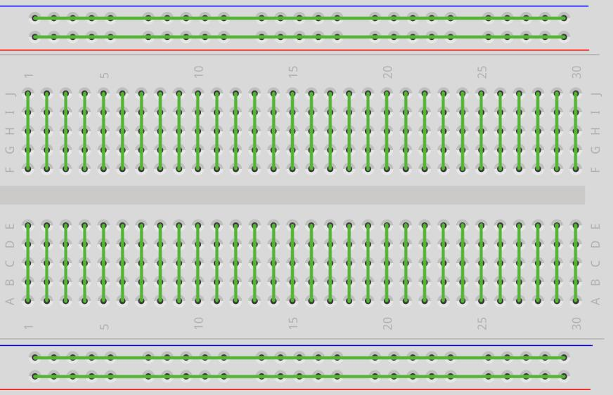
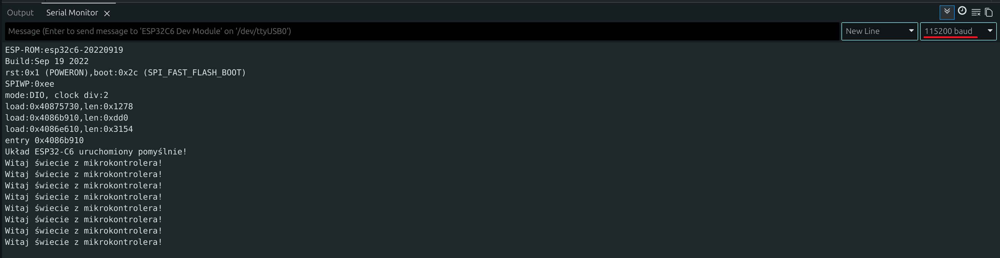
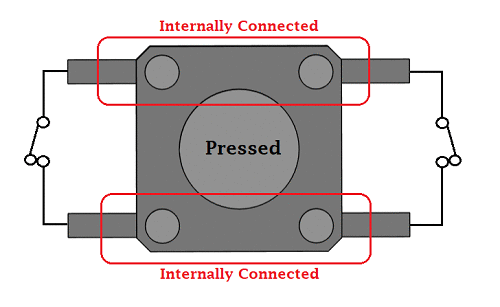

Wstęp do IO: Cyfrowe wyjścia i wejścia
Witamy w sekcji praktycznej! W tym rozdziale dowiesz się, jak budować obwody na płytce stykowej, komunikować się z komputerem przez port szeregowy oraz w pełni kontrolować sygnały cyfrowe – czyli takie, które przyjmują tylko dwa możliwe stany: włączony (1) lub wyłączony (0).
🔌 Płytka stykowa (Breadboard)
Zanim rozpoczniesz łączenie elementów na płytce stykowej, musisz zrozumieć jej wewnętrzną budowę oraz zasadę działania. Płytka stykowa (Breadboard) pozwala łączyć elementy elektryczne bez konieczności lutowania. Posiada tory przewodzące umieszczone pod warstwą tworzywa sztucznego, które tworzą z poszczególnych otworów połączone elektrycznie węzły.
Budowa płytki

Zasada jest prosta - zielone linie to połączenia:
- Każdy rząd 5 otworów (np. od 1A do 1E) to połączony przewód. Wpięcie tam dwóch nóżek elementów to tak, jakbyś zlutował je razem.
- Rowek pośrodku płytki to izolator – rząd 1A-1E NIE JEST połączony z rzędem 1F-1J.
- Krawędzie to magistrale – łączą w długich rzędach całą kolumnę "plusową" i "minusową". Niezbędne by łatwo rozprowadzić wspólne zasilanie.
💻 Port szeregowy (Serial)
Do komunikacji z komputerem służy wbudowany w mikrokontroler port szeregowy, reprezentowany w kodzie przez obiekt Serial. Aby móc z niego korzystać, musimy poznać podstawowe funkcje:
Serial.begin(prędkość): Uruchamia komunikację z komputerem. Prędkość (baud rate) określa, jak szybko płyną bity. Zazwyczaj stosujemy standardowe115200. Funkcję tę wywołujemy jednorazowo w blokusetup().Serial.println(tekst): Wysyła tekst lub wartość zmiennej do komputera i automatycznie przechodzi do nowej linii (dodaje znak Enter).Serial.print(tekst): Działa identycznie jakprintln(), ale nie przechodzi do nowej linii – kolejny komunikat pojawi się bezpośrednio za nim.delay(czas_ms): Wstrzymuje (zamraża) wykonywanie programu na określoną liczbę milisekund (1 sekunda = 1000 ms).
🎯 Ćwiczenie 1: Pierwszy program i Monitor Szeregowy
- Podłącz czyste ESP32-C6 za pomocą USB do komputera.
void setup() {
// Otwarcie portu komunikacyjnego. Ważne: prędkość musi być równa 115200!
Serial.begin(115200);
// Ta funkcja wyśle się TYLKO RAZ po zasileniu, bo jest w bloku "setup"
Serial.println("Wykonuję się tylko raz!");
}
void loop() {
// Pętla 'loop' obraca się w nieskończoność
Serial.println("Wykonuję się w pętli!");
// Wymuszamy "pauzę" na działanie procesora o 1000 milisekund (1 sekunda)
delay(1000);
}
Po upewnieniu się że masz wybrany odpowiedni port COM oraz model płytki wciśnij ikonę wgrywania (Ctrl + U), a w IDE z menu górnego wybierz Lupa z prawej strony (Monitor Szeregowy). Skontroluj w rogu jego okienka czy prędkość (baud rate) jest ustawiona na 115200. W przypadku Wokwi Serial Monitor otworzy się automatycznie i nie trzeba będzie wybierać prędkości.

Dla ciekawskich: Czym jest baud (baud rate)?
Baud określa prędkość transmisji danych w komunikacji szeregowej. W standardowych połączeniach tego typu 1 bod (baud) odpowiada przesłaniu 1 bitu na sekundę.
Ustawienie 115200 oznacza więc, że w ciągu jednej sekundy procesor wysyła lub odbiera dokładnie 115 200 bitów informacji. Jeśli po obu stronach połączenia (w mikrokontrolerze oraz na komputerze w programie Monitora) nie ustawimy dokładnie tej samej wartości, komputer błędnie zinterpretuje czas trwania każdego bitu. Zamiast tekstu zobaczysz wtedy nieczytelne, losowe znaki.
🛠️ Zadanie: Licznik sekund
Zmodyfikuj kod. Dodaj na samym początku pliku zmienną globalną: int licznik = 0;.
Zrób z niej licznik odliczający sekundy i wypisujący go w Serial Monitorze wraz ze stałym komunikatem.
Pokaż rozwiązanie
int licznik = 0;
void setup() {
Serial.begin(115200);
Serial.println("Rozpoczynam odliczanie!");
}
void loop() {
licznik++; // Skrót od: licznik = licznik + 1
Serial.print("Sekunda nr: "); // używamy .print aby nie stawiać znaku "entera"
Serial.println(licznik); // a przy wartości używamy .println aby po niej był "enter"
delay(1000);
}
💡 Wyjście cyfrowe (LED)
Aby sterować diodą LED, musimy wysłać napięcie z pinu GPIO. W tym celu korzystamy z dwóch kluczowych funkcji:
pinMode(pin, tryb): Konfiguruje dany pin do pracy. Jako tryb podajemyOUTPUT(wyjście, gdy chcemy sterować prądem) lubINPUT(wejście, gdy czytamy dane). Tę konfigurację wywołujemy raz wsetup().digitalWrite(pin, stan): Ustawia stan napięcia na skonfigurowanym wyjściu. Możemy podać stanHIGH(podaje pełne napięcie 3.3V) lubLOW(podaje masę 0V, wyłączając zasilanie).
W ramach tego ćwiczenia budujemy fizyczny układ z diodą LED na płytce stykowej.
Polaryzacja diody LED
Dioda elektroluminescencyjna (LED) jest elementem półprzewodnikowym o określonej polaryzacji – przewodzi prąd elektryczny i świeci tylko w jednym kierunku:
- Anoda (+): Dłuższe wyprowadzenie (nóżka) diody. Powinna być połączona z pinem GPIO mikrokontrolera (poprzez rezystor ograniczający prąd).
- Katoda (-): Krótsze wyprowadzenie diody (często oznaczone spłaszczeniem na krawędzi plastikowej obudowy). Powinno być połączone z masą układu (GND).
Prawo Ohma i rezystor szeregowy
Nigdy nie podłączaj diody LED bezpośrednio do zasilania lub pinu GPIO bez rezystora szeregowego. Dioda w kierunku przewodzenia stawia minimalny opór elektryczny, co doprowadzi do przepływu prądu o zbyt wysokim natężeniu i w konsekwencji do natychmiastowego termicznego uszkodzenia diody lub portu mikrokontrolera.
Wartość rezystora szeregowego obliczamy na podstawie prawa Ohma (\(R = \frac{U}{I}\)):
Gdzie:
- \(U_{\text{zasilania}} = 3{,}3\text{ V}\) (napięcie logiczne pinu GPIO w układzie ESP32-C6)
- \(U_{\text{diody}} \approx 2{,}0\text{ V}\) (typowy spadek napięcia na przewodzącej czerwonej diodzie LED)
- \(I_{\text{diody}} \approx 10\text{ mA} = 0{,}01\text{ A}\) (bezpieczny prąd diody, nieprzeciążający portu GPIO mikrokontrolera)
Podstawiając wartości do wzoru:
Ponieważ rezystory produkuje się w określonych szeregach wartości (np. E24), w praktyce wybieramy najbliższą większą dostępną wartość z szeregu, np. \(150\ \Omega\) lub bardzo popularny rezystor \(220\ \Omega\) (który ograniczy prąd do ok. 6 mA, co w zupełności wystarczy do jasnego świecenia diody).
🎯 Ćwiczenie 2: Sterowanie diodą LED (Blink)
// Przypisanie numerowi 2 etykiety.
const int PIN_LED = 2;
void setup() {
// Konfiguracja pinu GPIO jako wyjście – mikrokontroler będzie kontrolował stan napięcia na tym pinie.
pinMode(PIN_LED, OUTPUT);
}
void loop() {
// /* TUTAJ WSTAW FUNKCJE USTAWIAJACĄ STAN WYSOKI (HIGH) NA PIN */
delay(500);
// /* TUTAJ WSTAW FUNKCJE USTAWIAJACĄ STAN NISKI (LOW) NA PIN */
delay(500);
}
🛠️ Zadanie: Naprzemienne światła alarmowe
Dołóż drugą diodę z jej osobnym rezystorem na nowym rzędzie breadboarda i podłącz jej anodę pod np. port GPIO 3.
Spraw, aby jedna dioda zapalała się tylko w momencie gdy druga gaśnie, przypominając sygnały ostrzegawcze na przejeździe kolejowym.
Pokaż rozwiązanie
🖲️ Wejście cyfrowe (Przycisk)
W poprzednich ćwiczeniach mikrokontroler sterował stanem wyjść (wysyłał napięcie). W tym rozdziale skonfigurujemy go do odczytu sygnałów zewnętrznych (wprowadzania danych). Aby odczytać stan fizycznego przycisku (przełącznika), potrzebujemy:
pinMode(pin, INPUT_PULLUP): Konfiguruje pin jako wejście i aktywuje wbudowany rezystor podciągający do linii 3,3 V.digitalRead(pin): Odczytuje aktualny stan logiczny na danym pinie. Zwraca wartośćHIGH(3,3 V) lubLOW(0 V).
Rezystory Pull-up / Pull-down a stan nieustalony (floating)
Wejście mikrokontrolera w trybie INPUT ma ekstremalnie duży opór elektryczny. Z jednej strony to zaleta (pobiera znikomy prąd), ale z drugiej sprawia, że odłączony pin zachowuje się jak czuła antena. Gdy przycisk nie jest wciśnięty, przewód „wisi w powietrzu”, a układ znajduje się w tzw. stanie nieustalonym (floating). Zbiera wtedy zakłócenia z otoczenia, przez co digitalRead() odczytuje losowe zera i jedynki.
Aby zapewnić stabilny poziom napięcia, stosuje się rezystory:
- Pull-up (podciągający): Łączy pin z zasilaniem 3,3 V. W stanie spoczynku wymusza bezpieczny stan
HIGH(3,3 V). Wciśnięcie przycisku zwiera pin do masy (GND), co daje odczytLOW(0 V). - Pull-down (ściągający): Łączy pin z masą (
GND). W spoczynku wymusza stanLOW(0 V). Przycisk łączy pin z 3,3 V, więc jego wciśnięcie podaje stanHIGH.
Fizyczny rezystor na płytce vs wbudowany w mikrokontroler: Te układy możemy zrealizować na dwa sposoby:
- Zewnętrznie: podłączając tradycyjny rezystor (np. 10 kΩ) na płytce stykowej.
- Wewnętrznie: programowo aktywując rezystory wbudowane bezpośrednio w strukturę krzemową ESP32-C6. Nie jest to żadna wirtualna sztuczka programowa – wewnątrz chipu fizycznie znajdują się mikroskopijne rezystory o wartości ok. 30–40 kΩ. Deklarując w kodzie
INPUT_PULLUPlubINPUT_PULLDOWN, dajemy mikrokontrolerowi sygnał, by za pomocą wewnętrznego przełącznika tranzystorowego podłączył ten wbudowany rezystor do pinu GPIO.
Zasada BHP: Przed czym chroni nas ten rezystor?
- Bezpieczeństwo: Gdy wciskasz przycisk, prąd zasilania płynie do masy przez rezystor (np. 35 kΩ), co ogranicza natężenie do bezpiecznych 94 µA (3,3 V / 35 kΩ). Sam pin w trybie wejścia pobiera niemal zerowy prąd.
- Zwarcie linii zasilania (bez rezystora): Podłączenie przycisku bezpośrednio między 3,3 V a GND (bez żadnego rezystora) i wciśnięcie go spowoduje natychmiastowe zwarcie szyn zasilania, co zresetuje lub trwale uszkodzi stabilizator napięcia na płytce.
- Spalenie pinu GPIO (błąd programisty): Jeśli przez pomyłkę ustawisz pin jako wyjście (
OUTPUT) w stanieLOW(0 V), a przycisk podłączysz pod 3,3 V bezpośrednio (bez opornika szeregowego), wciśnięcie przycisku zmusi wyjście do przyjęcia napięcia 3,3 V. Popłynie prąd o ogromnym natężeniu, który nieodwracalnie spali port GPIO.
W tym ćwiczeniu użyjemy wbudowanego podciągania INPUT_PULLUP. Przycisk podłączamy tak, aby jego wciśnięcie zwierało pin z masą (GND). Oznacza to, że logika przycisku w programie będzie odwrócona:
- Przycisk puszczony → odczytujemy stan
HIGH - Przycisk wciśnięty → odczytujemy stan
LOW
Jak poprawnie podłączyć przycisk (tact switch)?
Fizyczny przycisk typu tact switch posiada zazwyczaj cztery nóżki, które wewnętrznie są połączone parami (nóżki leżące naprzeciwko siebie wzdłuż prostych krawędzi są trwale połączone). Naciśnięcie przycisku powoduje zamknięcie obwodu i połączenie wszystkich czterech wyprowadzeń.
Aby poprawnie podłączyć przycisk na płytce stykowej musisz uważać, aby nie wpiąć się w nóżki, które są wewnętrznie połączone na stałe (internally connected) – w przeciwnym razie odczyt będzie cały czas wskazywał stan wciśnięty (LOW), niezależnie od fizycznego naciskania.
Najbezpieczniejszym sposobem jest podłączenie przewodów po przekątnej przycisku (np. jeden styk do GPIO9, a styk po przekątnej do masy GND).

🎯 Ćwiczenie 3: Odczyt stanu przycisku
Zadanie: Zadeklaruj i odczytuj w pętli digitalRead(PIN_BTN). Zapal diodę wtedy, kiedy jej odczyt spadnie do stanu LOW:
const int PIN_BTN = 9; // Pin przycisku
const int PIN_LED = 2; // Pin LED z poprzednich ćwiczeń
void setup() {
pinMode(PIN_LED, OUTPUT);
// Zamiast INPUT używamy INPUT_PULLUP, by załączyć wbudowany opornik podciągający do 3.3V
pinMode(PIN_BTN, INPUT_PULLUP);
}
void loop() {
// Odczyt aktualnego stanu logicznego z wejścia GPIO
int aktualny_stan = digitalRead(PIN_BTN);
if (aktualny_stan == LOW) { // Pamiętaj! W Pullupie LOW oznacza naciśnięty!
/* ZAPAL DIODE Z POPRZEDNIEGO ZADANIA */
} else {
/* ZGAS DIODE */
}
delay(20); // Drobne opóźnienie dla stabilności (odciąża procesor i ignoruje delikatnie drgające blaszki styku w przycisku).
}
🛠️ Zadanie: Przycisk jako przełącznik (ON/OFF)
Przerób powyższy kod tak, aby jedno naciśnięcie (i puszczenie) przycisku zapaliło diodę na stałe, a kolejne wciśnięcie całkowicie ją zgasiło (tak jak klasyczny włącznik światła w pokoju).
Zjawisko drgania styków (Switch Bouncing)
Wciśnięcie fizycznego przycisku wydaje się nam natychmiastowe, ale dla mikrokontrolera tak nie jest. Wewnątrz przycisku metalowe blaszki po zetknięciu wielokrotnie sprężyście odbijają się od siebie przez pierwsze kilka milisekund.
Ponieważ pętla loop() wykonuje się błyskawicznie (tysiące razy na sekundę), mikrokontroler zinterpretuje te drgania jako kilkadziesiąt bardzo szybkich kliknięć w ułamku sekundy. Jeśli po prostu zaprogramujesz instrukcję typu stan = !stan, dioda zacznie migać w sposób losowy i niekontrolowany. Rozwiązaniem (nazywanym debouncingiem) jest odczytanie momentu wciśnięcia przycisku, a następnie chwilowe wstrzymanie programu (np. o 50 milisekund), aby blaszki zdążyły się uspokoić.
Pokaż rozwiązanie
Algorytm wymaga dwóch zmiennych w celu porównania stanu przycisku w obecnym oraz poprzednim cyklu pętli. Pozwala to na wykrycie samego momentu wciśnięcia (zbocza opadającego sygnału), a nie ciągłego odczytywania stanu trzymanego przycisku.const int PIN_BTN = 9;
const int PIN_LED = 2;
int poprzedni_stan = HIGH; // przed odpaleniem w spoczynku jest HIGH (pullup)
int stan_diody = LOW;
void setup() {
pinMode(PIN_BTN, INPUT_PULLUP);
pinMode(PIN_LED, OUTPUT);
}
void loop() {
int obecny_stan = digitalRead(PIN_BTN);
// Jeśli przycisk w tym cyklu został wciśnięty (stan LOW), a w poprzednim był jeszcze zwolniony (stan HIGH):
if (obecny_stan == LOW && poprzedni_stan == HIGH) {
if (stan_diody == LOW) {
stan_diody = HIGH;
} else {
stan_diody = LOW;
}
digitalWrite(PIN_LED, stan_diody);
// Programowe zabezpieczenie przed drganiem styków (debouncing):
delay(50);
}
poprzedni_stan = obecny_stan;
}